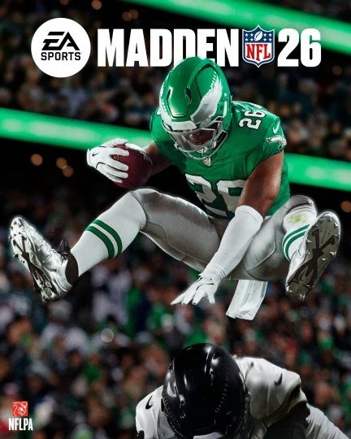
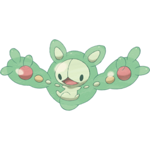
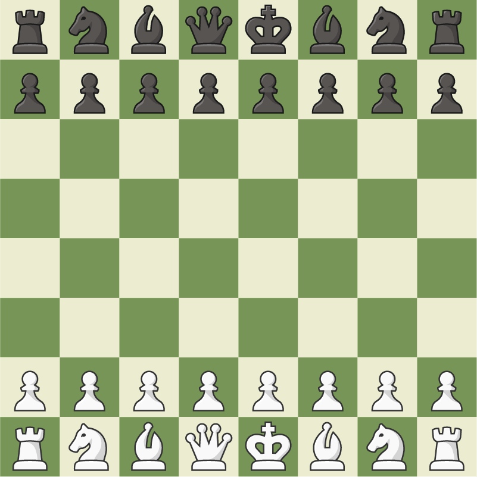
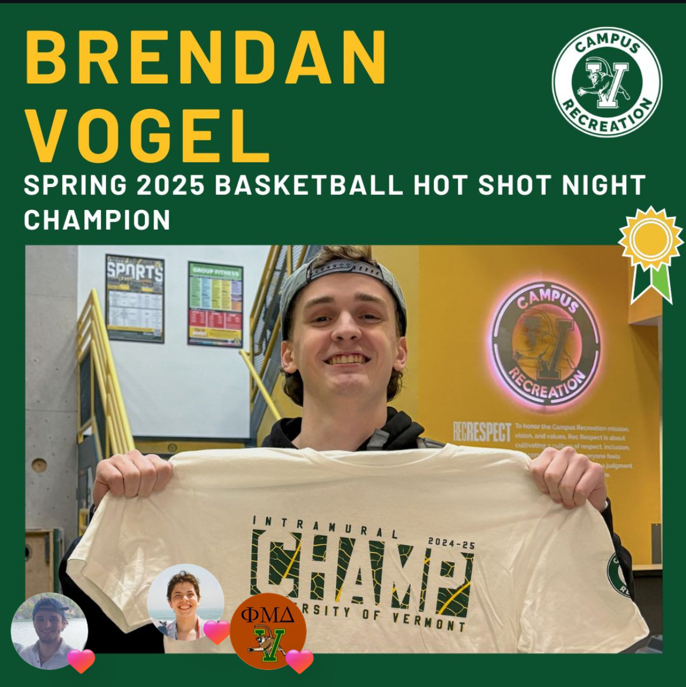

Favorite Video Games
Madden
I participate in 32 man franchise leagues that stretch multiple in game seasons. I also like to play Ultimate team. I typically build a team using exclusively players that played for the Eagles, which are my favorite team.

Pokemon
Pokemon is one of my longtime favorites, especially for team building and collecting. My two favorite Pokemon are Froslass and Reuniclus.



Chess.com
My ratings are 1400 rapid and 1100 blitz. Add me as a friend! chess.com/member/bvogel400

Basketball
Basketball is one of my favorite sports to play. I enjoy pickup games, but intramurals really remind me of playing in high school.
